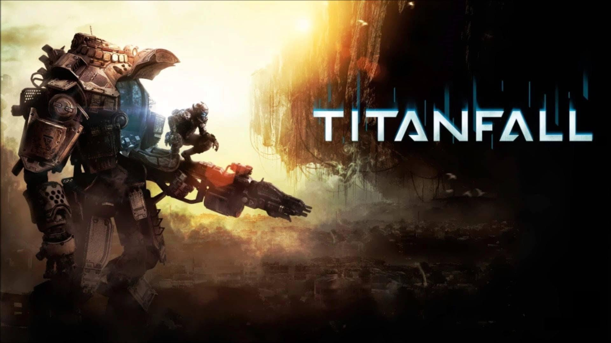

GAMES
Definisi Game
Menurut Kamus & Para Ahli
Apa itu Game???
Game diartikan sebagai permainan yang merujuk pada pengertian kelincahan intelektual & sebagai arena keputusan dan aksi pemainnya.
Game adalah sesuatu yang memiliki akhir dan cara mencapainya artinya ada tujuan, hasil dan serangkaian peraturan untuk mencapai keduanya.
Game adalah aktivitas yang mencakup karakteristik berikut : fun (bebas bermain adalah pilihan bukan kewajiban), separate (terpisah), uncertain, non-productive, governed by rules (ada aturan), dan fictitious (pura-pura).
Sejarah Perkembangan Game
Generasi-Generasi Game
Generasi Pertama(1972)
Generasi pertama konsol permainan video berlangsung dari tahun 1972, dengan rilis dari Magnavox Odyssey, hingga 1977, ketika pong-style produsen konsol meninggalkan pasar secara massal karena pengenalan dan keberhasilan mikroprosesor berbasis konsol.
Tahun 1975
Magnavox menyerah dan menghentikan produksi Odyssey. Sebagai gantinya, mereka mengikuti jejak Atari, memproduksi mesin ding dong bernama Odyssey 100, yang khusus menyajikan game Pong.
Generasi Kedua(1976)
Fairchild mencoba menghidupkan kembali dunia video game dengan menciptakan VES (Video Entertainment System). VES adalah mesin pertama yang disebut ”konsol”.
Konsol ini menggunakan kaset magnetik yang disebut cartridge. Nah, konsep ini kemudian diikuti oleh beberapa produsen lain, termasuk Atari, Magnavox, dan RCA, ketiga perusahaan tersebut juga merilis konsol serupa. Fairchild VES, pertama di dunia yang menggunakan media cartridge.
Tahun 1977
Dunia konsol menjadi tidak populer, game-game yang ada tidak berhasil menarik minat. Fairchild dan RCA mengalami kebangkrutan. Praktis, hanya ada Atari dan Magnavox yang masih bertahan di dunia video game.
Tahun 1978
Magnavox meluncurkan Odyssey 2, seperti halnya Odyssey pertama, konsol ini pun gagal menjadi hit. Tak lama berselang, Atari meluncurkan konsol legendaris, Atari 2600, yang terkenal dengan game Space Invaders-nya
Tahun 1980
Berbagai produsen konsol muncul, dan mereka mengambil Atari 2600 sebagai konsep dasar, perkembangan dunia game pun semakin pesat.
Tahun 1983
Dunia video game kembali ambruk. Game-game yang kurang kreatif membuat konsol kembali mendapat sambutan dingin, apalagi, PC saat itu menjadi semakin canggih. Orang lebih memilih membeli PC ketimbang konsol video game, selain untuk bermain, PC juga produktif untuk bekerja.
Game-game komputer (PC Game) semakin berkembang pesat, hingga saat ini. Pelopor PC ber-game saat itu adalah Commodore 64, konsol sekaligus personal computer yang menyediakan tampilan grafis 16-warna dan memiliki kapasitas memori jauh lebih baik dari konsol videogame model apa pun.


Generasi Ketiga(1983)
Perusahaan bernama Famicom (Jepang) menciptakan gebrakan baru, sebuah konsol bernama Famicom/Nintendo Entertainment System (NES) dirilis di akhir 1983. Konsol ini menampilkan gambar dan animasi resolusi tinggi untuk pertama kalinya setelah mendapat sambutan hangat di Jepang.
Famicom memperluas pemasarannya ke Amerika, yang dikenal dengan NES (Nintendo Entertainment System). Nintendo memiliki chip pengaman pada cartridge game mereka, dengan demikian seluruh game yang akan dirilis haruslah seijin developer Nintendo. Dan akhirnya, muncul sebuah game legendaris, Super Mario Brothers, yang dibintangi karakter fenomenal yang tetap eksis hingga kini, Mario. Famicom dari Nintendo, berhasil merajai pasar videogame di era generasi ketiga.


Generasi Keempat(1988)
NES mendapat sambutan hangat di seluruh dunia, dan sebuah perusahaan bernama Sega mencoba menyaingi Nintendo. Sega merilis konsol next-generation mereka, Sega Mega Drive (yang juga dikenal dengan Sega Genesis). Konsol ini menyajikan gambar yang lebih tajam dan animasi yang lebih halus dibanding NES. Konsol ini cukup berhasil memberi tekanan, tetapi NES tetap bertahan dengan angka penjualan tinggi.
Tahun 1990
Nintendo kembali menggebrak dengan konsol next-gen mereka, SNES (Super Nintendo Entertainment System). Selama 4 tahun, Nintendo dan Sega menjadi bebuyutan, meskipun ada beberapa produsen seperti SNK dengan NeoGeo-nya, NEC dengan TurboGrafx-16 dan Phillips CD-i, tapi kedua konsol mereka begitu handal dan populer. Rivalitas yang legendaris, Super NES dan Mario Brothers sebagai ikonnya melawan SEGA Mega Drive dan Sonic the Hedgehog sebagai ikonnya.

Generasi Kelima(1990-1994)
Sega dan Nintendo tetap bersaing. Berbagai game fenomenal dirilis. SNES menyertakan chip Super FX pada cartridge mereka, dan Sega menggunakan Sega Virtua Processor, keduanya bertujuan untuk meningkatkan kualitas grafis dari game. Alhasil, SNES dan Sega saling beradu dengan game-game keren seperti Donky Kong Country (SNES) dan Vectorman (Sega).
Tahun 1993
Sebuah perusahaan ternama, Panasonic, merilis konsolnya yang bernama Panasonic 3DO. Ini adalah konsol pertama yang menggunakan CD sebagai pengganti cartridge. Harganya yang sangat mahal membuat konsol ini tidak populer, 3DO tidak bertahan lama dan harus segera menghentikan produksinya, Panasonic 3DO merupakan konsol game pertama yang menggunakan media CD.
Tahun 1994
Atari kembali meluncurkan konsol baru untuk menandingi Nintendo dan Sega. Atari Jaguar jelas jauh lebih canggih ketimbang NES maupun Mega Drive, tetapi penggunaannya yang sulit menjadi batu sandungan, belum lagi, pada tahun yang sama, Sony merilis konsol super legendaris, PlayStation. Atari bangkrut dan akhirnya melakukan merger. Konsol basis CD yang pertama kali menuai sukses adalah Sony PlayStation. Konsol Jepang ini segera mendapat sambutan hangat, dan hingga saat ini, PlayStation sudah terjual ratusan juta unit. PlayStation yang juga disebut PS-One merupakan konsol terlaris sepanjang masa. Sega dan Nintendo tampaknya menyadari ketertinggalan mereka dari Sony. Sega kemudian merilis Sega Saturn, dan Nintendo mengeluarkan Nintendo 64.


Generasi Keenam (1998)
Setelah jatuhnya Nintendo dan Sega, kini dunia konsol jadi milik Sony. PlayStation menjadi raja dan bisa dibilang tidak memiliki pesaing. Sega mencoba meluncurkan Sega Dreamcast untuk mematahkan dominasi Sony, tetapi kembali gagal, akhirnya pada tahun itu juga, Sega mengundurkan diri dari dunia produsen konsol.
Tahun 2000
Sony semakin ’merajalela’ ketika mereka berhasil merilis konsol barunya, PlayStation 2, yang sudah berbasis DVD. Nintendo mencoba bertahan di dunia konsol dengan merilis GameCube. Konsol ini tidak menggunakan DVD 12 cm biasa, melainkan DVD yang berukuran lebih kecil, yaitu 8 cm. Ukuran keping medianya yang lagi-lagi nyeleneh membuat GameCube kurang populer. Satu-satunya pesaing serius PlayStation 2 adalah Xbox.
Sebuah konsol keluaran Microsoft ini menggebrak dengan tampilan visual yang sangat tajam dan berkualitas yang kala itu lebih menarik dibanding dengan PlayStation 2. Sayangnya game-game Xbox ternyata tidak sepopuler PlayStation 2. Satu game Xbox yang menjadi hit dan cukup fenomenal yaitu Halo. Karena game ini udah memanfaatkan fasilitas ‘unggul’ dari Microsoft, yaitu Xbox Live.


Generasi Ketujuh(2005)
Boleh dibilang, Xbox terlambat meluncur ke pasaran dibanding PlayStation 2, dan support game-game tenar juga sangat minim. Tetapi, Microsoft seolah belajar dari kesalahannya. Pada saat Sony masih melakukan riset untuk konsol PlayStation 3 yang menggunakan Blu-Ray, Microsoft kali ini telah mengambil seribu langkah lebih cepat. Xbox 360, konsol generasi terkini yang memanfaatkan media HD-DVD.
Tahun 2006
Boleh dibilang, Xbox terlambat meluncur ke pasaran dibanding PlayStation 2, dan support game-game tenar juga sangat minim. Tetapi, Microsoft seolah belajar dari kesalahannya. Pada saat Sony masih melakukan riset untuk konsol PlayStation 3 yang menggunakan Blu-Ray, Microsoft kali ini telah mengambil seribu langkah lebih cepat. Xbox 360, konsol generasi terkini yang memanfaatkan media HD-DVD.
Posisi PlayStation 3 kurang menguntungkan, selain karena Xbox 360 sudah keburu tenar duluan, Wii juga menawarkan inovasi pada stik kontrol mereka yang ’motion sensitive’. Apalagi, harga konsol terbaru Sony itu merupakan yang paling mahal dibanding dua pesaingnya. Alhasil, penjualan PlayStation 3 menjadi yang terendah di bawah Xbox 360 dan Wii. Xbox 360, Wii, Playstation 3, menjadi pesaing tetap dari generasi sebelumnya.
Generasi Kedelapan(2012)
Generasi ini dimulai pada tahun 2012 (bukan 2013) kemaren. Generasi kedelapan atau biasa disebut Next-Gen adalah generasi penerus kesuksesan PS3 yang digantikan oleh PS4, Xbox 360 digantikan oleh Xbox One dan tidak lupa Wii tergantikan oleh Wii U dengan gamepad. Generasi ini dijamin akan mengungguli kesuksesan generasi sebelumnya dengan bukti angka penjualan dalam 24 jam sudah terjual 1 juta unit oleh Xbox One dan PS4. Generasi ini AMD mulai digunakan pada konsol next gen tersebut. nVidia selaku pembuat grafis card pada generasi sebelumnya merasa kecewa, hal ini membuat nVidia mulai membuat kartu grafis powerful untuk PC sehingga lebih mengungguli konsol next-gen. Maka lahirlah Steam Machine yang dikembangkan oleh Valve selaku pembuat "media sosial" game ternama di PC yaitu Steam. Playstation Vita juga merupakan generasi ini
Jenis - jenis games
- Adventure
- Platform
- RPG (Role-Playing Games)
- Puzzle
- MMORPG
- Simulasi
- Web Based Games
- Terkadang dalam satu game bisa terdapat lebih dari 1 genre/Tipe.
Adventure
- Melibatkan eksplorasi atau interaksi di lingkungan sekitar.
- Cerita serta penyelesaian puzzle juga disorot pada jenis game ini.
- Biasanya interaksi menggunakan pointer dan klik.
- Pertarungan pada peran ini cukup kecil.
- Contoh : Indiana Jones, Monkey Island dsb.
-


Platform
- Mulai pada tahun 1981 dengan munculnya game "Donkey Monkey" dan "Space Panic".
- Diidentifikasi dengan lingkungan yang bisa dinavigasi.
- Membutuhkan waktu dan lompatan untuk mencapai suatu destinasi.
- Contohnya Sonic The Hedgehog.
-

RPG
- Kekuatan atau kemampuan
- Direpresentasikan dalam statistik.
- Karakter menjelajahi dan menyelesaikan quest.
- Experience/Statistik bertambah.
- Contoh: Dark soul dan The Witcher.


Puzzle
- Sangat singkat
- Addictive
- Selesaikan puzzle.
- Contoh: tetris, puzzle bobble.


MMORPG
- Massive Multiplayer Online Role Playing Game
- Game role playing multiplayer
- Online
- Contoh : Ragnarok, Warcraft.


Simulasi
- Ciptakan suasana mirip dengan asli.
- Contoh : SimCity, The sims.


Web Based Games
- Dimainkan via Website
- dibangun dengan Flash atau Shockwave.
- Contoh: Rival Saga,Pet Forest


Jenis Game Berdasarkan Platform
Arcade Games
- Yaitu yang sering disebut ding-dong di Indonesia, biasanya berada di daerah / tempat khusus dan memiliki box atau mesin yang memang khusus di desain untuk jenis video games tertentu dan tidak jarang bahkan memiliki fitur yang dapat membuat pemainnya lebih merasa "masuk dan menikmati ", seperti pistol, kursi khusus, sensor gerakan, sensor injakkan dan stir mobil ( beserta transmisinya tentunya ).
PC GAMES
- Yaitu video game yang dimainkan menggunakan Personal Computers.

CONSOLE GAMES
- Yaitu video games yang dimainkan menggunakan console tertentu, seperti Playstation 2, Playstation 3, XBOX 360, dan Nintendo Wii.
 terbaru 2014.png)
HANDHELD GAMES
- Yaitu game yang dimainkan di console tertentu atau khusus video game yang dapat dibawa kemana-mana, Contoh Nintendo DS, dan Sony PSP.
MOBILE GAMES
- Yaitu games yang dapat dimainkan atau khusus untuk mobile phone atau PDA
Games Terkenal saat ini
Titanfall
- Dirilis pada tanggal 11 Maret 2014
- Genre Multiplayer First Person shooter
- Xbox one, Xbox 360,PC
- 

Dark Soul 2
- Dirilis pada tanggal 11 Maret 2014 untuk Playstation 3, Xbox 360, April 24 2014 untuk PC.
- Genre Action Role Playing
- Playstation 3, Xbox 360, PC.


DOTA 2
- Dirilis pada tanggal 9 Juli 2013 di Windows dan 18 Juli 2013 di OS X dan Linux.
- Genre Multiplayer Online Battle Arena.
- Microsoft Windows, OS X, Linux.

Watch Dogs
- Dirilis pada tanggal 27 Mei 2014 untuk Windows, Playstation 3, 4, Xbox 360, Xbox one, WII U comming soon
- Action Adventure
- Microsoft Windows, PS 3, PS 4, Xbox 360, Xbox One, WII U


Grand Thef Auto V
- Dirilis pada tanggal 17 September2013
- Action Adventure
- Playstation 3, Xbox 360


Call Of Duty (COD)
- Dirilis pada tanggal 5 November 2013
- First person - shooter
- Microsoft Windows, PS 3, PS 4, Wii U, Xbox 360, Xbox One
-

Perubahan Tampilan Game Lalu dan Sekarang
Resident Evil

Silent Hill

Tomb Raider

Thief


Software - software terbaik untuk membuat Game
Game Maker

- Merupakan engine pembuat game paling populer saat ini
- Pembuatan game dengan cara drag and drop untuk tingkat pemula
- Game yang lebih kompleks dapat digunakan scripting
- Tersedia komponen pendukung yang bisa diunduh misalnya: background, musik latar, skrip pemograman, banner
- Dapat diunduh di http://www.yoyogames.com/gamemaker
Unity 3D

- Merupakan engine yang berbasis cross-platform
- Untuk games online membutuhkan plugin Unity Web Player
- Tidak ada fitur desain, untuk mendesain bisa digunakan 3dsmax atau Blender
- Mendukung 3 bahasa pemograman: JavaScript, C# dan Boo
- Dapat diunduh di http://unity3d.com
RPG Maker VX

- Merupakan engine pembuat Game bergenre RPG
- Cocok untuk game berukuran kecil
- Tidak membutuhkan scipting untuk membuat tetapi untuk membuat alur cerita lebih menarik bisa ditambhakan scripting
- Tidak bisa mengubah wajah karakter
- Dapat Diunduh di www.rpgmakerweb.com
FPS Creator
-
- Merupakan engine (First Time Shooter) pembuat game seperti point blank, counter strike, call of duty, dll
- Banyak fitur-fitur yang tentunya mempermudah pembuatan game FPS
- Grafik tidak sebagus FPS populer
- Dapat didownload di http://fpscreator.thegamecreators.com/
Cry Engine
- Merupakan engine yang paling populer saat ini
- Tidak perlu menggunakan spek dewa untuk menjalankan game yang dibuat dengan software ini
- Game seperti Crysis, Crysis 2, ASTA, Class 3 dan yang paling baru Crysis 3 menggunakan Cry Engine
- Dapat didownload di http://www.crytek.com/cryengine
Anvril Engine
- Merupakan engine yang mengedepankan interaksi dengan lingkungan seperti dukungan siang dan malam, hujan & angin kencang, petir & guntur, dll
- Game seperti Assasin Creed dan Prince of Persie menggunakan engine Anvril
- Dapat didownload di http://www.desura.com/engines/scimitar
Dampak Positif dan Negatif Game
Positif
- 1. Melatih fisik
- Ada banyak jenis permainan video game. Salah satunya konsol komputer yang memerlukan beberapa aktivitas dan gerakan fisik. Misalnya menari, bermain gitar, atau bermain drum. Orangtua bisa memilihkan metode permainan bergerak tersebut untuk anak-anak mereka. Ini akan lebih baik dibandingkan mereka sekadar bermain video game dengan cara duduk di sofa sepanjang hari.
- 2. Kebugaran dan nutrisi
- Banyak jenis video gim yang menggabungkan kebugaran, nutrisi, dan hidup sehat untuk menjadi tujuan utama permainan. Video game yang dimaksud akan menyimulasi olahraga outdoor yang menjadi alternatif latihan di luar ruangan. Misalnya video game tinju, lari, tenis, dan sebagainya. Ini akan memancing permainan penurunan berat badan dan mempertahankan gaya hidup sehat.
- 3. Melatih Ketangkasan
- Bermain game bisa juga meningkatkan ketangkasan anak anda. Ada fungsi kerja, bermain, sekaligus berolahraga. Ada banyak permainan dalam video game yang memancing tingkat koordinasi dan kejelian mata anak anda.
- 4. Keterampilan sosial
- Kurangnya keterampilan sosial dan kemampuan berinteraksi dengan orang lain secara teratur dapat merusak perkembangan anak. Bahkan, anak-anak berpotensi depresi. Anak-anak yang pemalu biasanya kurang percaya diri ketika bersosialisasi dengan rekan-rekannya. Mungkin, membina hubungan sosial antar anak saat mereka bermain video game lebih tepat. Dengan permainan online (online game) misalnya, anak-anak anda bisa mengenal lebih banyak orang dan menambah jumlah temannya.
- 5. Meningkatkan kemampuan belajar
- Kompleksitas dari video game memberikan anak anda kesempatan untuk meningkatkan keterampilan kognitif dan penalarannya. Video game telah berkembang ke titik dimana pengguna harus mengambil kendali dan berpikir untuk diri mereka sendiri. Pemain juga perlu mengambil alih kendali dan memasukkan perintah sederhana melalui pengontrol permainan video. Seringkali, video game membutuhkan pemain yang pintar memecahkan teka-teki. Mereka harus sabar dan kreatif agar mereka bisa maju ke babak permainan berikutnya.
- 6. Meningkatkan sportivitas
- Sportif dan fair play adalah nilai-nilai umum yang dikembangkan dalam kompetisi pemuda. Video game juga menawarkan hal yang sama. Dia mengajarkan nilai-nilai keteraturan. Pada permainan online (online game) misalnya, masing-masing pemain akan bersaing secara teratur satu sama lainnya.
- 7. Mengurangi stres
- Tekanan belajar yang padat dan kegiatan ekstrakurikuler yang banyak seringkali membuat anak anda stres. Video game menawarkan anak anda outlet untuk mengurangi tingkat stres mereka. Dengan bermain game, maka sang anak akan terbebas dari segala tekanan yang mereka hadapi di dunia luar. Untuk menghilangkan stresnya, anak anda bisa membenamkan dirinya dalam asyiknya bermain video game sementara waktu.
- 8. Membentuk tim kerja
- Kerjasama tim yang kuat banyak terbina dalam permainan video game. Permainan online misalnya, membutuhkan pemain yang efektif berkomunikasi dengan tim mereka. Sementara itu, mereka terus melakukan tugas-tugas yang diembankan kepada mereka demi meraih kemenangan.
- 9. Mengalihkan rasa sakit Anda terkadang berurusan dengan rasa sakit fisik dan juga emosional
- Video game berfungsi untuk mengalihkan sementara masalah itu. Video game akan menawarkan kesempatan bagi anda untuk melarikan diri dari dunia luar. Mereka yang menderita penyakit tertentu, bisa memainkan beberapa video game untuk mengalihkan rasa sakitnya.
- 10. Membuat bahagia
- Salah satu kenyataan adalah bermain video game itu membuat seseorang merasa bahagia. Namun, hal terpenting adalah memoderasi jumlah waktu yang ideal untuk dihabiskan bermain video game. Sebab, ada kemungkinan video game bisa menyebabkan anda atau anak anda kecanduan. Anda harus ingat untuk menempatkan batas waktu yang wajar untuk bermain video game. Berikan contoh yang bagus untuk anak-anak anda.
Negatif
- 1. Kurang tidur
- Anak sudah menghabiskan sebagian besar waktunya untuk belajar di sekolah dan beraktivitas. Namun, mereka ingin tetap bermain video game. Sehingga, banyak anak mengorbankan waktu berharga mereka untuk tidur dan menggunakannya untuk bermain video game. Pecandu video game yang kurang tidur maka dapat membahayakan kesehatannya.
- 2. Hidup kotor
- Ketika seseorang yang mencandu karena terlibat dalam permainan video game, maka ia mulai mengabaikan segala hal terkait kebersihan pribadi. Seseorang akan malas mandi, sehingga menyebabkannya memiliki banyak jerawat, hingga penyakit gigi.
- 3. Isolasi diri Seseorang yang bermain video game berlebihan menyebabkan orang itu memilih mengisolasi dirinya dari dunia luar.
- Ia cenderung mengasingkan diri dari teman dan keluarga. Orang itu lebih asyik dengan permainannya. Ketidakpedualian seseorang terhadap kebersihan pribadi hanyalah awal perpindahan orang itu dari dunia nyata dan menjauh dari kehidupan sosial. Baginya, interaksi dengan tokoh-tokoh hero video game lebih berarti dibandingkan interaksi dengan siapapun. Orang yang sudah kecanduan video game mudah mengabaikan pekerjaan, sekolah, teman-teman, dan keluarganya. Ia menolak melakukan aktivitas apapun begitu bangun pagi kecuali bermain video game.
- 4. Depresi
- Meskipun pecandu video game tak menyadari awal dirinya despresi, namun perlahan penyakit ini akan meresap cepat ketika dia merasa diperbudak oleh kecanduannya sendiri. Hanya ketika seseorang berhenti bermain, kemudian berpikir tentang waktu-waktu yang telah dia lewatkan begitu saja, baru orang itu menyesalinya dan berujung pada depresi
- 5. Stres
- Stres dari kecanduan video game biasanya disebabkan oleh sejumlah skenario. Pertama, seseorang menjadi begitu terobsesi dengan video game. Kegagalan mereka memenangkan level-level pada video game menyebabkannya stres berlebihan. Kedua, seseorang menyadari bahwa hidupnya kacau karena video game. Ini menyebabkan stres juga. Satu-satunya cara orang untuk menghindari tipe stres kedua ini adalah dengan tetap bermain video game dan melupakan waktu.
- 6. Arthritis dan Carpal
- Tunnel Syndrome Kedua penyakit di atas adalah gangguan fisik. Video game bisa menyebabkan masalah pada jempol seseorang di kemudian hari. Tubuhnya juga rentan penyakit osteoarthritis. Sedangkan carpal tunnel syndrome adalah tekanan pada saraf di pergelangan tangan anda.
- 7. Makan kurang sehat
- Ketika pecandu video game terlalu sibuk untuk bermain, maka ia akan jarang mandi, dan jarang tidur. Ini juga berdampak pola makan mereka menjadi tak sehat. Pecandu video game selanjutnya akan beralih ke makanan cepat saji dan memilih memakan makanan beku dan instan. Mereka justru memperbanyak minuman soda dan minuman energi dengan harapan mereka bisa bermain dalam kondisi prima. Ini menyebabkan pecandu video game mudah terserang obesitas, diabetes, dan kondisi kesehatan serius.
- 8. Perilaku agresif
- Video game menjadi ajang melepaskan agresivitas dalam diri seseorang. Bentuknya adalah ambisi menguasai permainan dan memenangkan permainan. Bagi mereka yang sudah kecanduan, sikap agresif yang berlebihan ini pada akhirnya juga tanpa mereka sadari mereka praktekkan dalam kehidupan nyata. Ini yang menyebabkan seseorang menampilkan pola-pola prilaku agresif yang tak biasa. Misalnya, marah besar jika aktivitas bermain video game mereka diganggu.
- 9. Gaya hidup buruk
- Pecandu video gama akan mencurahkan semua waktunya untuk aktif bermain video game. Dia hanya akan duduk atau berbaring dalam praktik kesehariannya. Kebiasaan makannya juga buruk, dan kebiasaan tidurnya kacau. Ini menyebabkan mereka mudah terkena stroke, penyakit jantung, dan hipertensi.
- 10. Berbohong
- Berbohong adalah salah satu cara pecandu video game untuk menutupi perilaku abnormalnya. Ini adalah salah satu tanda seseorang telah kecanduan penuh oleh video game. Mereka akhirnya berbohong pada dirinya sendiri dan menyangkal bahwa mereka tak memiliki masalah sama sekali.
Game Masa Depan / Game Virtual
- Virtual reality adalah teknologi yang memungkinkan seseorang melakukan simulasi terhadap suatu objek nyata dengan menggunakan komputer yang mampu membangkitkan suasana tiga dimensi (3-D) sehingga membuat pemakai seolah-olah terlibat secara fisik.
- Cara kerja sistem virtual reality pada prinsipnya adalah seperti berikut. Pemakai melihat suatu dunia semu, yang sebenarnya berupa gambar-gambar yang bersifat dinamis. Melalui perangkat headphone atau speaker, pemakai dapat mendengar suara yang realistis. Melalui headset, glove dan walker, semua gerakan pemakai dipantau oleh sistem dan sistem memberikan reaksi yang sesuai sehingga pemakai seolah merasakan sedang berada pada situasi yang nyata, baik secara fisik maupun secara psikologis.
- Virtual reality game adalah di mana seseorang dapat mengalami berada di lingkungan tiga-dimensi dan berinteraksi dengan lingkungan tersebut selama pertandingan. Ini merupakan bagian penting dari permainan
Virtual Reality
- ini adalah cara untuk mendeteksi keberadaan seseorang dalam sebuah game .Bio Sensing adalah sensor kecil yang melekat pada sarung tangan data, jas atau bahkan gerakan tubuh dan catatan yang dibuat oleh orang itu dalam ruang 3D. Gerakan-gerakan diinterpretasikan oleh komputer dan memicu berbagai tanggapan dalam ruang tersebut.
- Sebagai contoh: Anda mengenakan sarung tangan data yang yang memiliki sensor yang melekat padanya. Anda memakai ini sebagai bagian dari sebuah permainan mengemudi. Sensor ini merekam cara tangan Anda bergerak sebagai bagian dari permainan ini, mengatakan, ketika memutar roda kemudi dalam arah tertentu.
Bio-sensing
- Gerakan-gerakan ini diumpankan kembali ke komputer yang kemudian menganalisis data dan menggunakan ini untuk mengubah tindakan Anda menjadi tanggapan yang tepat pada layar.
- Kedengarannya agak teknis tetapi merupakan cara cerdas untuk mendeteksi gerakan pemain selama pertandingan dan menggunakan ini untuk mempengaruhi apa yang terjadi di dalam pertandingan itu. Ini berarti bahwa Anda, pemain, menjadi bagian penting dari permainan.

Apakah Ada Kuliah Jurusan Gaming di Dunia???
Jurusan Gaming pertama terdapat di Korea Selatan
- Menjadi seorang ahli dalam bermain video game adalah keterampilan atau bakat yang kebanyakan orangtua tidak akan bisa mengerti.
- Sebagian besar orangtua sudah memiliki rencana untuk anak-anaknya, jenjang karir mana yang akan ditempuh oleh mereka.
- Di antara berbagai jenjang karir itu, profesional gaming mungkin tidak termasuk dalam daftar para orangtua.
- Namun di Korea Selatan, tampaknya bahwa orangtua mungkin mulai mempertimbangkan kembali sikap mereka
- Terutama menjadi terampil di video game dan bermain game yang merupakan bagian dari "E-SPORTS", yang bisa mendaratkan anak mereka di salah satu universitas terkemuka di Korea Selatan.
- Menurut laporan dari PGR21, tampaknya salah satu universitas Korea Selatan, Chung - Ang University (salah satu dari 10 universitas terbaik di Korea Selatan), akan mulai menerima pelamar e-Sports tahun depan,
- Para siswa yang diterima akan mampu untuk mendaftar di Departemen Ilmu Keolahragaan.
- Tentu saja akan ada faktor-faktor lain yang menentukan masuknya calon mahasiswa ke universitas.
- Tetapi bagi mereka yang tidak berpartisipasi dan pandai dalam olahraga tradisional seperti sepak bola, bola basket, baseball, golf, dsb, mereka dapat bernafas lega karena keterampilan gaming mereka tidak akan terbuang sia-sia saat mereka memilih untuk mengejar gelar sarjana.
Apa itu E-SPORT?

- E- Sport adalah kompetitif dalam dunia permainan video game.
- Genre permainan yang paling umum dengan e-sport ini adalah real-time strategy (RTS), fighting, first person shooting (FPS), massively-multiplayer online (MMOG), dan racing.
- Permainan yang dimainkan secara kompetitif pada tingkat amatir, semi-profesional dan profesional, dan beberapa permainan telah diselenggarakan.
- Beberapa kompetisi dalam bentuk liga dan turnamen e-sport seperti Major League Gaming (MLG), Global Starcraft II Liga (GSL), World Cyber Games (WCG), DreamHack, dan Master Intel Extrem menyediakan real-time streaming permainan, dan hadiah uang tunai kepada para pemenang.
E-Sport di dunia International

- Di Korea Selatan, TV kabel menayangkan berita , event dan semua yang berhubungan dengan e-sport selama 24 jam, channel TV itu bernama Ongamenet,
- Di Jerman, mayoritas GIGA Television dan ESL TV Menayangkan e-sport.
- Di Inggris, siaran XLEAGUE.TV pada saluran SKY 208, meyangkan eSports dan siaran pertandingan dari liga dan turnamen online.
- Di Perancis, Game One mengusulkan beberapa pertandingan e-sport di sebuah event yang disebut "Arena Online" dan merupakan mitra dari Trophy Xfire, sebuah turnamen invitasi. Mereka menyiarkan pertandingan Counter-Strike, Counter-Strike: Source, Command & Conquer 3: Tiberium Wars, dan baru-baru ini Call of Duty 4: Modern Warfare.
- Di Amerika Serikat, ulasan tentang game bisa lihat pada berbagai saluran. ESPN memiliki acara yang disebut Madden Nation, yang menunjukkan gamer bermain Madden NFL untuk Xbox 360. DirecTV menayangkan live pertandingan Championship Gaming Series. CBS menayangkan World Series 2007 dari turnamen Video Games yang diselangarakan di Louisville, Kentucky. G4 menayangkan up to date dunia video game.
Prestasi Indonesia di E-SPORT

Indonesia menjuarai Asian CyberGames-Counter Strike Tahun 2013
- Nixia Team asal Jakarta semua diangkat sebagai Duta Games Indonesia karena segudang prestasinya di kancah Internasional